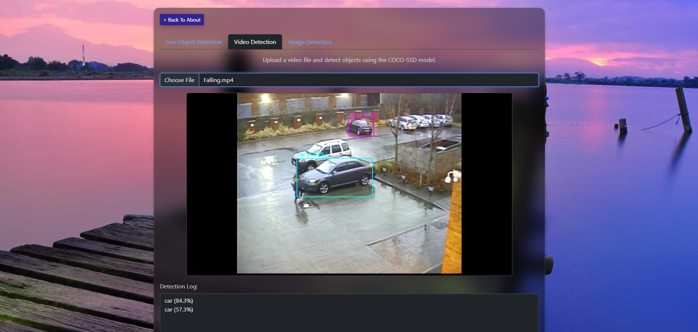
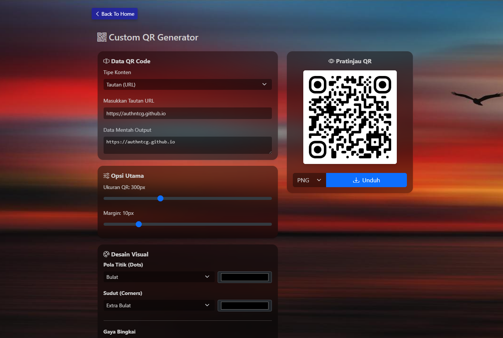

Hi there!
Saya Galih Respati Permana. Seorang Web Developer lulusan Teknik Informatika dari ITENAS. Fokus utama saya adalah merancang aplikasi web berskala besar yang tidak hanya modern, tetapi juga efisien.
Saat ini saya membangun arsitektur back-end (NestJS) dan antarmuka front-end (ReactJS) di PT. Jagoo Talenta Indonesia. Pengalaman sebelumnya sebagai L1 Support Analyst sangat memengaruhi standar kerja saya: kode yang baik tidak hanya sekadar berjalan, tapi juga harus tangguh di level infrastruktur.
Saya memiliki ketertarikan mendalam pada kebersihan arsitektur perangkat lunak dan optimasi sistem. Pendekatan saya sederhana: menerjemahkan kerumitan teknis menjadi produk digital yang stabil dan berdampak langsung bagi bisnis.
Tertarik berkolaborasi? Unduh CV saya di beranda.
Tech Stack
Fullstack Developer
PT. Jagoo Talenta
Backend & Frontend
Portfolio

Inspiro Dashboard
A simple dashboard for monitoring your daily activities, built with HTML, CSS, and JavaScript.

Object Detection
Experimental: Object detection using COCO-SSD model with TensorFlow.js.

QR Code Generator
Experimental: Generate QR codes using JavaScript.